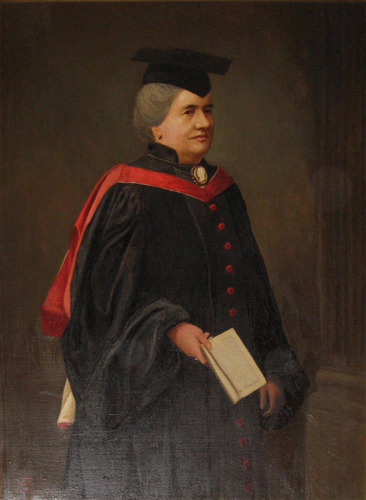
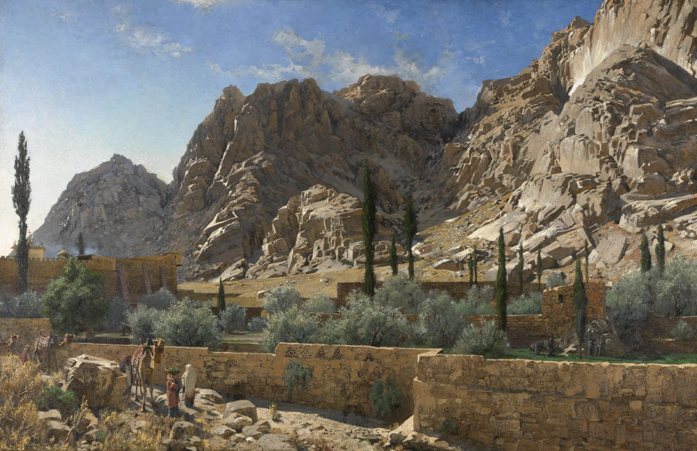
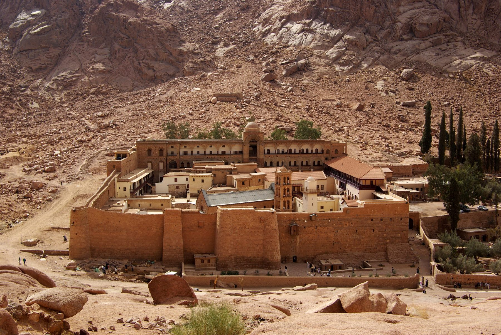
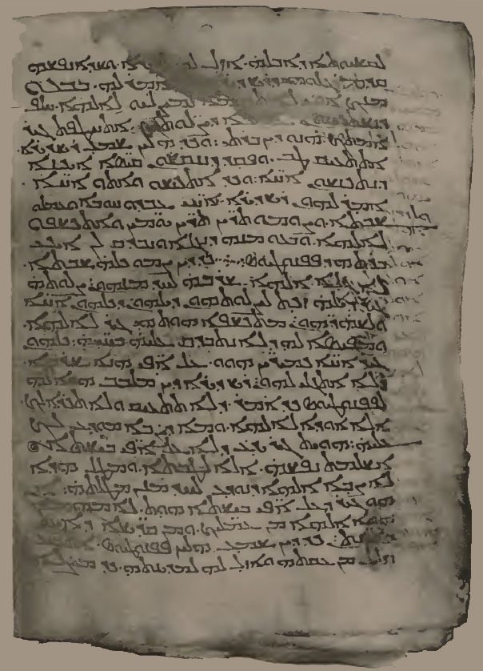
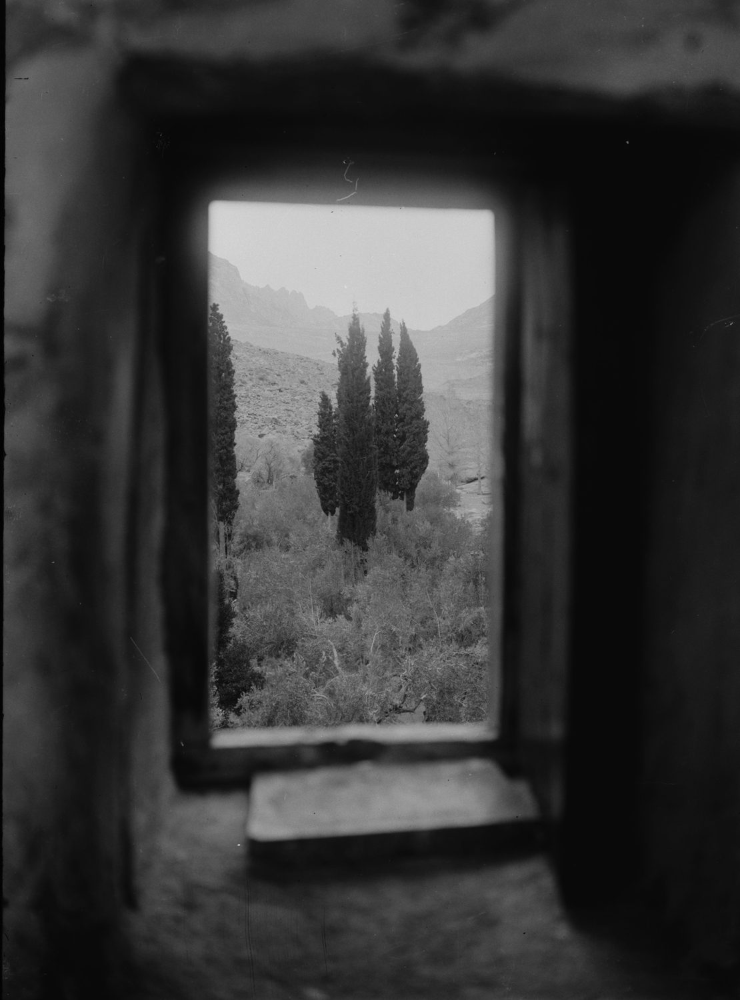
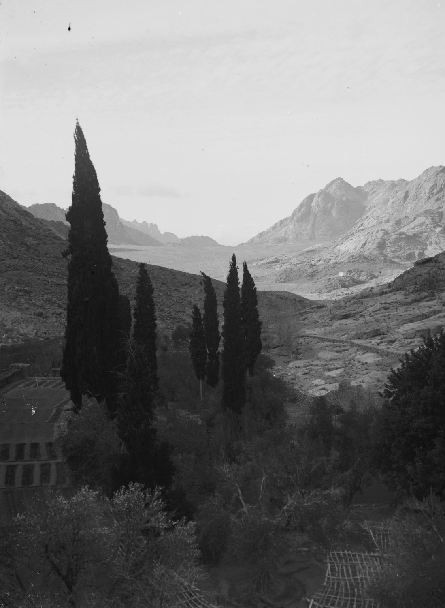
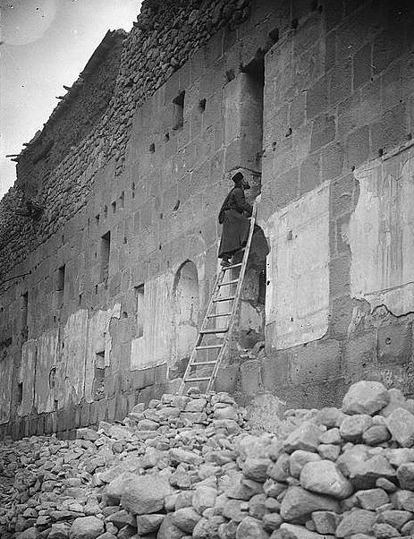
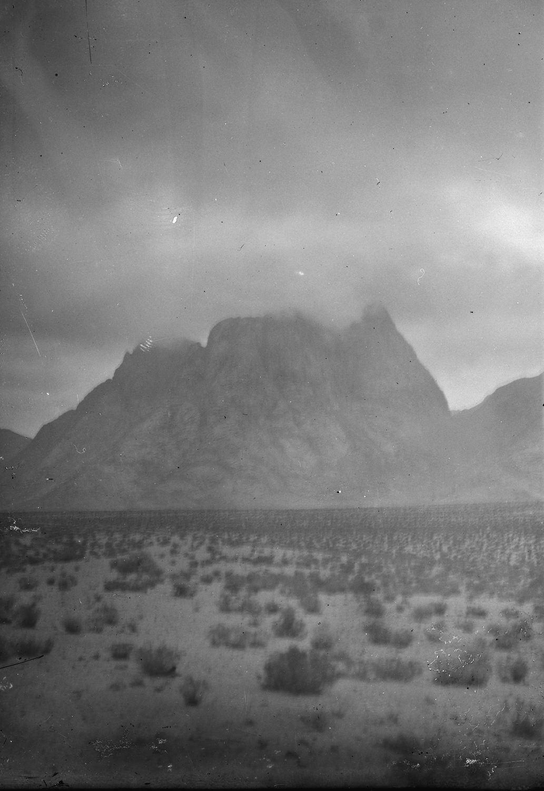
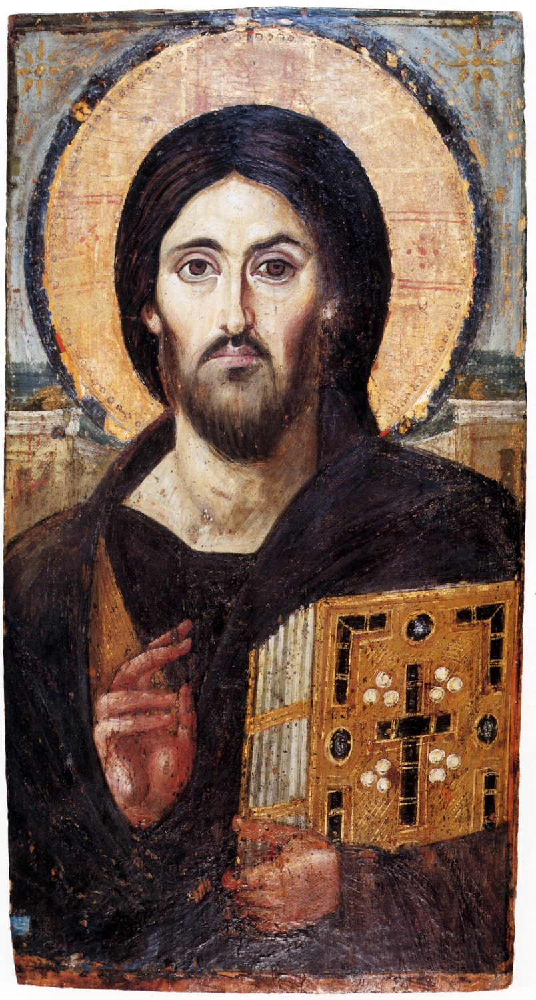
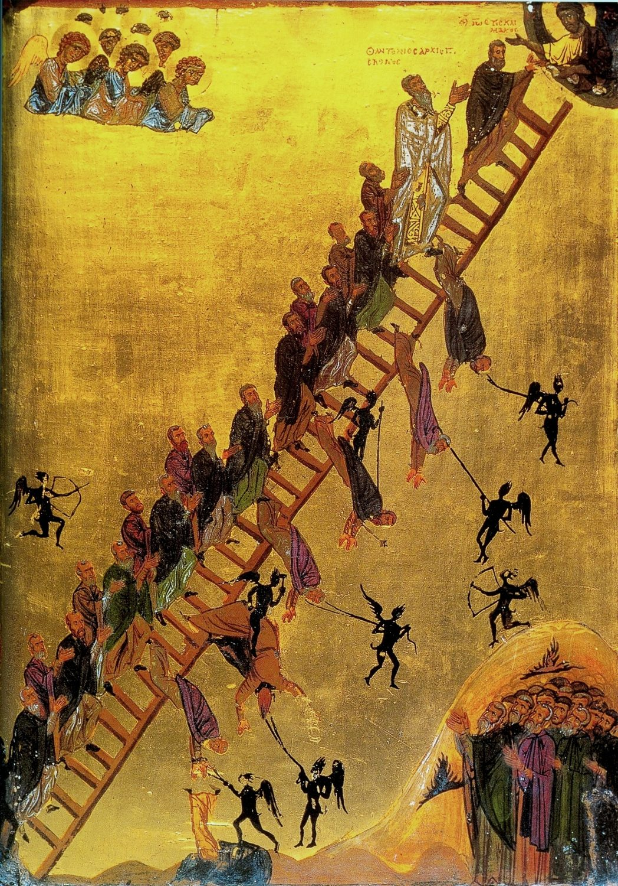

아직 펼치지 않은 카드흩어지고 사라질 뻔한 책 · 1시나이의 쌍둥이 자매책 한 권 아래에 더 오래된 글씨가 숨어 있었어요. 이 사람은 무엇을 찾아냈을까요?책장 밑에 지워진 글씨가 숨어 있었대! 무슨 글씨였을까?
1892년 2월이집트 시나이반도 · 성 카타리나 수도원
시나이의 쌍둥이 자매
130여 년 전 겨울, 쉰을 앞둔 쌍둥이 자매가 낙타를 타고 사막을 건넜어요. 다섯 장면을 따라 걸으며, 촛불 없이는 아무것도 보이지 않던 도서관의 어두운 벽장 앞에 서 봐요.
아주 옛날, 쌍둥이 자매가 낙타를 타고 사막을 건넜어. 사막 한가운데 수도원에서 보물 같은 책을 찾았대. 우리도 같이 가 볼까?
검수 전 초안이에요. 장면은 자매가 남긴 책(1893, 1894)과 확인한 기록에 있는 것만 옮겼고, 상상은 ‘눈 감고 상상해 보기’에서만 해요. 따옴표 안의 말은 영어 원문을 이 안내서가 우리말로 옮긴 것이에요.
시안 확인용카드 단계 미리 보기
1
길
1892년 1월 28일, 쉰을 앞둔 쌍둥이 자매가 배로 수에즈만을 건너 낙타에 올라요. 아그네스는 한 해 전에 남편을 잃었고, 마거릿도 여섯 해 전에 남편을 먼저 보냈어요.
사막 길은 아흐레. 일요일에는 성경 속 ‘엘림’으로 전해지는 골짜기에서 낙타를 세우고 쉬었어요.
쌍둥이 자매가 낙타를 타고 아흐레 동안 사막을 건너. 둘 다 사랑하는 사람을 먼저 떠나보낸 뒤였대.
물어보기아주 먼 길을 떠난다면, 누구와 함께 가고 싶어?
2
도착
아흐레 동안 모래와 바위만 보며 걸어온 끝에, 바위산 사이로 높은 돌 성벽이 나타나요.


번호를 누르면 설명이 나와요.
1 · 성벽
높은 돌 성벽은 6세기에 쌓았어요. 20세기 전까지는 성벽 높은 곳에 난 문으로 드나들었어요.
아주 두꺼운 돌 성벽이야. 옛날에는 높은 곳에 있는 문으로 드나들었대.
2 · 주님의 변모 대성당
회색 지붕 아래가 수도원의 큰 성당이에요. 542년에 짓기 시작해 9년 만에 마쳤어요. 성당 동쪽에는 모세가 불타는 떨기나무를 본 자리로 전해지는 ‘떨기나무 경당’이 있어요.
회색 지붕 아래가 큰 성당이야. 모세가 불타는 떨기나무를 본 자리라고 전해지는 작은 예배당도 있어.
3 · 종탑
종탑은 1871년에 세웠어요. 아홉 개의 종은 러시아 황제 알렉산드르 2세가 보냈어요. 자매가 왔을 때는 세운 지 20년쯤 된 새 종탑이었어요.
종이 아홉 개나 달린 종탑이야. 쌍둥이 자매가 왔을 때는 꽤 새것이었대.
4 · 흰 첨탑
수도원 담 안에는 작은 이슬람 사원도 있어요. 1106년 무렵, 원래 있던 건물을 고쳐 만들었어요. 오랜 세월 이 땅의 무슬림 이웃과 함께 지내 온 수도원의 역사를 보여 줘요.
하얀 탑은 이슬람 사원이야. 오랫동안 다른 종교 이웃과 함께 지내 왔대.
5 · 정원의 사이프러스
성벽 밖 정원에는 지금도 사이프러스가 서 있어요. 자매는 이 정원의 사이프러스와 올리브, 꽃 핀 아몬드 나무를 책에 적어 두었어요.
키가 큰 나무는 사이프러스야. 쌍둥이 자매도 이 정원을 보고 책에 적었대.
“마침내 수도원이 눈앞에 나타났다. 좁은 골짜기에 포근히 안긴 채, 담을 두른 정원에 둘러싸여.”
자매의 책(1893)에서
6세기부터 수도사들이 한 번도 떠나지 않고 기도해 온 곳이에요. ‘지금’을 눌러 오늘의 수도원도 둘러보세요.
드디어 사막 한가운데 높은 성벽이 보여! 1,400년 넘게 수도사들이 살아온 곳이야.
물어보기‘지금’을 눌러 봐. 종이 아홉 개 달린 종탑을 찾을 수 있어?
3
어두운 벽장
2월 8일, 도서관. 시리아어 책들은 어두운 벽장 안에 있었고, 촛불 없이는 아무것도 보이지 않았어요. 사서 갈락테온 신부가 두툼한 책 한 권을 꺼내 와요.

손가락이나 마우스로 촛불을 움직여 책장을 비춰 보세요.
“한 번 흘끗 보는 것만으로, 이 책이 팔림프세스트라는 걸 알 수 있었다.”
아그네스의 글(1894)에서
“280쪽이 넘도록 여백을 훑어 내려가는 동안, 내가 읽어 낼 수 있었던 낱말은 모두 복음서에서 나온 것이었다.”
아그네스의 글(1894)에서
이 쪽의 진한 위 글은 성녀 에우프로시네의 이야기, 그 아래 지워진 글은 마태복음 1장이에요. 시리아어로 된 복음서 가운데 가장 오래된 사본으로 꼽혀요.
촛불을 움직여 봐! 진한 글씨 밑에 희미한 글씨가 보이지? 그게 예수님 이야기가 담긴 복음서래.
물어보기숨어 있던 글씨를 처음 발견했다면, 뭐라고 외쳤을까?
4
수도원에서 보낸 한 달
정교회 전통 성가 녹음이에요. 시나이에서 녹음한 소리는 아니에요.
붙어 버린 책장은 주전자의 김으로 살살 떼어 냈어요. 마거릿이 책장을 넘기고 아그네스가 사진을 찍어, 358쪽을 모두 담았어요.
수도사들은 하루에 여덟 번 노래로 예배를 드렸고, 정원에 친 천막은 밤마다 영하로 떨어졌어요. 이듬해 다시 왔을 때, 갈락테온 신부는 아그네스를 어머니처럼 여긴다고 말했어요.
“떨어진 아몬드 꽃잎이 깔린 땅은, 마치 눈이 내려앉은 듯 빛났다.”
자매의 책(1893)에서
붙은 책장을 주전자 김으로 떼어 내고 한 장씩 사진을 찍었어. 수도사들은 하루에 여덟 번이나 노래로 기도했대.
물어보기하루에 여덟 번 노래로 기도한다면, 어떤 노래를 부르고 싶어?
5
방명록에 남긴 한 줄
떠날 무렵, 아그네스는 수도원 방명록에 두 사람의 이름과 함께 한 줄을 남겼어요.
“섬기는 모습은 여러 가지여도, 성령은 같다.”
아그네스가 방명록에 쓴 말 · 고린도전서 12장을 빌렸어요
장로교인 자매와 정교회 수도사들. 3월 8일 아침 자매는 수도원을 떠났고, 이듬해 학자들과 다시 와서 지워진 글씨를 한 자 한 자 옮겨 적었어요.
떠나기 전에 방명록에 ‘모습은 달라도 같은 성령’이라고 적었대. 서로 다른 교회 사람들이 친구가 된 거야.
물어보기나와 다른 친구에게 한 줄을 남긴다면, 뭐라고 쓰고 싶어?
눈 감고 상상해 보기
촛불 하나만 켠 좁은 방이에요. 유리 없는 창으로 사막의 찬바람이 들어와요. 손에 든 양피지는 천 년도 더 지난 것이에요. 희미한 글씨가 복음서라는 걸 알아본 순간, 아그네스의 마음은 어땠을까요?
눈을 감아 봐. 촛불 하나, 찬바람, 아주 오래된 책. 희미한 글씨가 복음서라는 걸 처음 알아챈 순간, 너라면 어땠을까?
나의 자리
내 삶에도 ‘지워진 글씨’처럼 아래에 숨은 오래된 이야기가 있을까요?
연필로 쓰고 지운 자국을 본 적 있어? 거기 뭐라고 썼는지 보일까?
마음에 닿는 한 줄을 고르거나 직접 써 보세요. 한 줄을 남기면 이 자리의 도장이 찍혀요. 이 기기에만 저장돼요.
더 깊이
궁금한 칸만 펼쳐 읽어도 괜찮아요.
알고 보면
팔림프세스트 양피지는 짐승 가죽으로 만들어 무척 귀했어요. 그래서 옛 글을 긁어내거나 씻어 내고 그 위에 새 글을 쓰기도 했어요. 이렇게 두 번 쓴 책을 팔림프세스트라고 해요.
위에 쓴 사람 아그네스가 읽어 낸 기록에 따르면, ‘베트 마리 카디시’의 은수자 요한이 양피지가 모자라 옛 시리아어 복음서 한 권을 뜯어서 그 위에 여성 성인들의 이야기를 썼어요. 쓴 해는 처음에 697년으로 읽었다가, 나중에 778년으로 바로잡았어요.
이듬해 1893년, 자매는 케임브리지의 벤슬리 교수 부부, 버킷 부부, 렌들 해리스와 함께 다시 왔어요. 학자들이 쪽을 나눠 맡아 지워진 글씨를 읽어 냈어요. 누가 발견의 공을 가져야 하느냐를 두고 서운한 일도 있었다고 해요.
또 하나의 발견 1896년, 자매는 카이로에서 사 온 낡은 히브리어 종이 몇 장을 케임브리지의 학자 솔로몬 셰크터에게 보여 주었어요. 셰크터는 그 가운데서 구약 외경 『집회서』(벤 시라)의 히브리어 사본 조각을 알아봤어요. 이것이 실마리가 되어, 카이로 옛 회당의 창고(게니자)에 쌓여 있던 문서 약 19만 점이 케임브리지로 옮겨졌어요.
학위 그때 케임브리지 대학은 여성에게 학위를 주지 않았어요. 대신 독일 할레 대학(1899)을 시작으로 세인트앤드루스, 하이델베르크, 더블린 대학이 명예박사 학위를 주었어요. 하이델베르크 대학이 여성에게 준 첫 신학 박사 학위였다고 해요.
횃불을 넘겨주리라 자매는 케임브리지에 장로교 신학교인 웨스트민스터 칼리지를 세우는 데 땅과 큰돈을 내놓았어요. 1897년 머릿돌을 놓고, 1899년 문을 열었어요. 자매의 집 문 위에는 ‘횃불을 넘겨주리라(lampada tradam)’라는 라틴어 글귀가 있었어요.
사진으로 더 보기 · 수도원의 하루








사진을 누르면 크게 볼 수 있어요.
그리스도인들은 이렇게 읽어요


그리스도인들은 성경이 처음부터 여러 언어로 옮겨지며 퍼졌다고 봐요. 시리아어는 예수님과 제자들이 쓰던 아람어의 한 갈래예요. 그래서 이 사본은 초기 교회가 복음서를 어떻게 읽었는지 보여 주는 귀한 창으로 여겨져요.
시나이는 성경에서 ‘하나님을 만난 산’의 전통이 이어지는 곳이에요. 수도원은 모세가 하나님의 말씀을 받은 산으로 전해지는 시나이산 기슭에 있고, 수도원의 떨기나무 경당은 모세가 불타는 떨기나무를 본 자리로 전해져요. 7세기에 이 수도원의 원장이던 요한 클리마쿠스는 수도사의 삶을 하늘로 오르는 서른 개의 계단에 빗댄 책 『하늘에 오르는 사다리』를 썼어요. 수도원에는 이 책을 그림으로 옮긴 12세기 이콘이 남아 있어요.
그리고 이 이야기는 서로 다른 교회의 사람들이 함께 옛 말씀을 지켜 낸 이야기로도 읽혀요. 장로교인 자매와 정교회 수도사들, 그리고 오랜 세월 수도원 곁에 살아온 무슬림 이웃까지요.
성경에서 이어 읽기
지금 그 자리
확인한 날 · 2026년 11월 17일 · 바뀌기 쉬운 정보라 정기적으로 다시 확인해요
수도원과 둘레 지역은 2002년 유네스코 세계유산(성 카타리나 지역)이 되었어요. 도서관은 바티칸 다음으로 옛 사본을 많이 가진 곳으로 꼽혀요.
수도원 공식 안내에 따르면 보통 오전 9시부터 11시 30분까지 들어갈 수 있고, 금요일과 일요일, 큰 정교회 축일에는 문을 닫아요.
2025년 5월 이집트 법원이 수도원 땅을 둘러싼 소송에서 판결을 내리자, 수도사들이 항의의 뜻으로 방문객을 받지 않았다는 보도가 있었어요. 2026년 10월 그리스 정부는 수도원과 이집트 정부가 합의에 이르렀다고 발표했어요(10월 말 기준 아직 서명 전). 가기 전에는 꼭 최신 소식과 공식 안내를 확인하세요.
도서관의 지워진 글씨들은 2011년부터 특수 촬영으로 되살리고 있어요. 160개가 넘는 팔림프세스트에서 열 가지 언어의 지워진 글이 드러났고, 연구용 사이트에서 볼 수 있어요.
징검다리 · 더 보고 싶다면
- 대한성서공회 「성서의 땅을 찾아서」 ‘시나이산’ 한국어 · 회원 로그인
- 대한성서공회 「성서의 땅을 찾아서」 ‘광야’ 한국어 · 회원 로그인
- 자매의 여행기 『How the Codex Was Found』 소리책 영어 낭독 · 2시간 28분 · LibriVox 무료
- 같은 책 원문(1893) 영어 · 인터넷 아카이브
- Atlas Obscura ‘How Lady Bible Hunters Made the Victorian Era’s Most Stunning Scriptural Find’ 영어 기사
- 성경 박물관 ‘The Sisters Who Went to Sinai’ 영어 · 짧은 글
- 시나이 팔림프세스트 프로젝트 영어 · 되살린 글씨 보기
- 재닛 소스키스, 『The Sisters of Sinai』(2009) 영어 책 · 한국어판은 찾지 못했어요
조심할 점
‘예수님이 쓰신 말 그대로’라고 하지 않아요. 시리아어는 아람어의 한 갈래이지만, 예수님이 쓰신 갈릴리 지방의 아람어와 똑같지는 않아요.
같은 수도원에서 나온 ‘시나이 사본’(티셴도르프가 가져간 그리스어 성경)과는 다른 책이에요. 언어도, 찾은 사람도, 지금 있는 곳도 달라요.
수도원 땅 문제는 아직 이어지는 일이에요. 어느 한쪽을 탓하지 않고 확인된 사실만 옮겼어요.
이 사본에는 마가복음의 마지막 열두 절(16장 9~20절)이 없어요. 아주 오래된 그리스어 사본 몇 권도 같아서 사본 연구에서는 널리 알려진 사실이지만, 처음 만나는 분께 꼭 필요한 내용은 아니라 여기에만 적어 둬요. 교회마다 이 부분을 설명하는 방식이 다를 수 있어요.
마음에 남은 장면 금박
다섯 장면 가운데 가장 오래 마음에 남은 장면 하나를 골라 주세요. ‘더 깊이’를 한 칸 이상 펼쳐 읽었다면 카드에 금박이 입혀져요.
다시, 함께, 직접 채색
셋 가운데 하나만 해도 카드가 채색돼요.
다른 날 다시 찾아오기
아이와 함께 ‘영화처럼 보기’를 끝까지 보기‘아이와 함께’를 켜고 ‘영화처럼 보기’를 끝까지 보세요
직접 보거나 가 봤어요
근거 보기 (19)
- Margaret Dunlop Gibson, 『How the Codex Was Found』(1893) · 인터넷 아카이브
- Agnes Smith Lewis, 『A Translation of the Four Gospels from the Syriac of the Sinaitic Palimpsest』(1894) · 인터넷 아카이브
- Wikipedia: Agnes Smith Lewis and Margaret Dunlop Gibson
- Wikipedia(독일어): Agnes Smith Lewis · 명예박사 연도
- Wikipedia: Syriac Sinaiticus
- Wikipedia: Saint Catherine’s Monastery
- 성 카타리나 수도원 공식 안내: General Information
- 성 카타리나 수도원 공식 안내: Catholicon of the Transfiguration
- Cambridge Past, Present & Future: Agnes Smith Lewis & Margaret Dunlop Gibson
- Books & Culture(2010): Synoptic Sisters
- History of Information: 카이로 게니자의 발견
- 케임브리지 대학 도서관 『Genizah Fragments』 61호(2011)
- Sinai Palimpsests Project: About
- UNESCO 세계유산: Saint Catherine Area
- Patrick Comerford(2025.6.3): 수도사들이 문을 닫다
- EWTN News(2025.6.6, 2025.9.26 고침): 수도원 문을 닫다
- Athens News(2026.10.25): 수도원 합의 발표
- 대한성서공회 개역개정 본문
- Wikipedia: Agnes Smith Lewis (남편 사뮤얼 루이스 1891년 세상을 떠남)
그림·사진·소리 출처
- 존 페디 그림, 「아그네스 스미스 루이스」 · 퍼블릭 도메인 · 위키미디어 공용
- 사진: Berthold Werner(2010) · CC BY-SA 3.0 · 위키미디어 공용
- 아돌프 폰 메켈, 「시나이의 성 카타리나 수도원」, 1890년 무렵 · 벨기에 헨트 미술관 · 퍼블릭 도메인
- 수도원 정원, 20세기 초 · 아메리칸 콜로니 사진부 · 미국 의회도서관 매슨 컬렉션(알려진 저작권 제한 없음)
- 수도원 창문 너머의 정원, 20세기 초 · 아메리칸 콜로니 사진부 · 미국 의회도서관 매슨 컬렉션(알려진 저작권 제한 없음)
- 눈보라 치는 시나이산, 20세기 초 · 아메리칸 콜로니 사진부 · 미국 의회도서관 매슨 컬렉션(알려진 저작권 제한 없음)
- 아그네스 스미스 루이스가 찍은 팔림프세스트 한 쪽(마태복음 15장) · 1896년 책에 실림 · 퍼블릭 도메인
- 시리아어 시나이 사본 82b쪽: 위 글은 성녀 에우프로시네 이야기, 아래 지워진 글은 마태복음 1장 · 퍼블릭 도메인
- 절벽 위 기도방으로 오르는 수도사, 1900~1920년 무렵 · 아메리칸 콜로니 사진부 · 퍼블릭 도메인
- 이콘 「하늘에 오르는 사다리」, 12세기 · 시나이 성 카타리나 수도원 · 퍼블릭 도메인
- 이콘 「판토크라토르(전능하신 그리스도)」, 6세기 · 시나이 성 카타리나 수도원 · 퍼블릭 도메인
- 소리: 비잔틴 성가(정교회 전통 성가) 녹음 · CC0 · 위키미디어 공용 · 시나이에서 녹음한 것은 아니에요 · 1분 10초만 잘라 씀
‘처음 만나는 기독교 문화’ 안내서의 카드 한 장으로 만든 뒷면 시안 2예요. 실제 인물의 사진은 쓰지 않았어요. 카드 단계와 남긴 글은 이 기기에만 저장돼요.